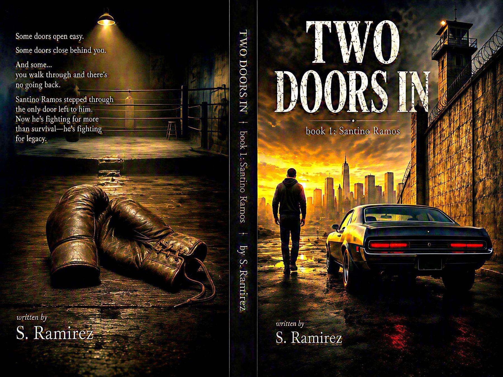

About the Book
Some doors open easy.
Some doors close behind you.
And some… you walk through and there’s no going back.
Santino Ramos stepped through the only door left to him. Now he’s fighting for more than survival—he’s fighting for legacy.
Santino Ramos is the first of three books in the Two Doors In series.
Book Details
Series: Two Doors In
Book: Book One
Genre: Coming-of-Age Crime / Prison Novel / Hard-Boiled
Formats: Paperback, hardcover, and Kindle eBook
Publisher: Orange Cat Press
Status: Available now on Amazon
Buy on Amazon
Full Wrap Cover
